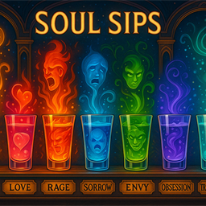

Soul Sips
Summary
Soul Sips are glowing shots served at the Sanctuary in the Sky, each carrying the taste and feeling of an emotion. Blue nostalgia, fiery red glory and golden homecoming can turn a round of drinks into something unexpectedly personal.

Fancy seeing what a shift actually looks like?
CLOCK INDescription
Soul Sips arrive in glowing little glasses, each colour promising a feeling rather than an ordinary flavour. Ashai’s deep-blue choice brings a rush of bittersweet memories. Goaden swallows fiery red glory. Yukon chooses the warmth of a soldier coming home to his dog.
A feeling in a glass still meets the person drinking it. The same round that draws delighted curiosity from one guest leaves another suddenly vulnerable, asking friends for reassurance. At the Sanctuary, ordering a drink can reveal more than starting a conversation.
Background
Soul Sips are enchanted beverages crafted by the skilled mixologists of the Sanctuary in the Sky. Each shot embodies a raw emotion—joy, love, anger, sadness, fear, or euphoria—with colours and flavours that shift to match the feeling they contain. When consumed, the drinker experiences a brief but intense emotional rush, flooding their senses with the purest essence of that emotion. Some shots bring pleasant waves of bliss and warmth, while others plunge the drinker into depths of sorrow or fury. The experience is visceral, unforgettable, and dangerously addictive to those seeking to feel something—anything—in a world that often numbs.
Abilities
- Instant Emotional Experience
- Color-Shifting Liquid
- Flavor Corresponds to Emotion
- Brief But Intense Effect
Examples
- Joy (golden, tastes like sunshine)
- Love (rose-pink, tastes like warmth)
- Anger (crimson, tastes like fire)
- Sadness (deep blue, tastes like rain)
Gallery
Select an artwork to see the complete image.

Soul Sips.

Soul Sips at the Sanctuary bar.

Glowing drinks beneath stained glass.
Related Entries
Discover where your allegiance lies in the world of Silver Clouds.
Take the Faction Assessment